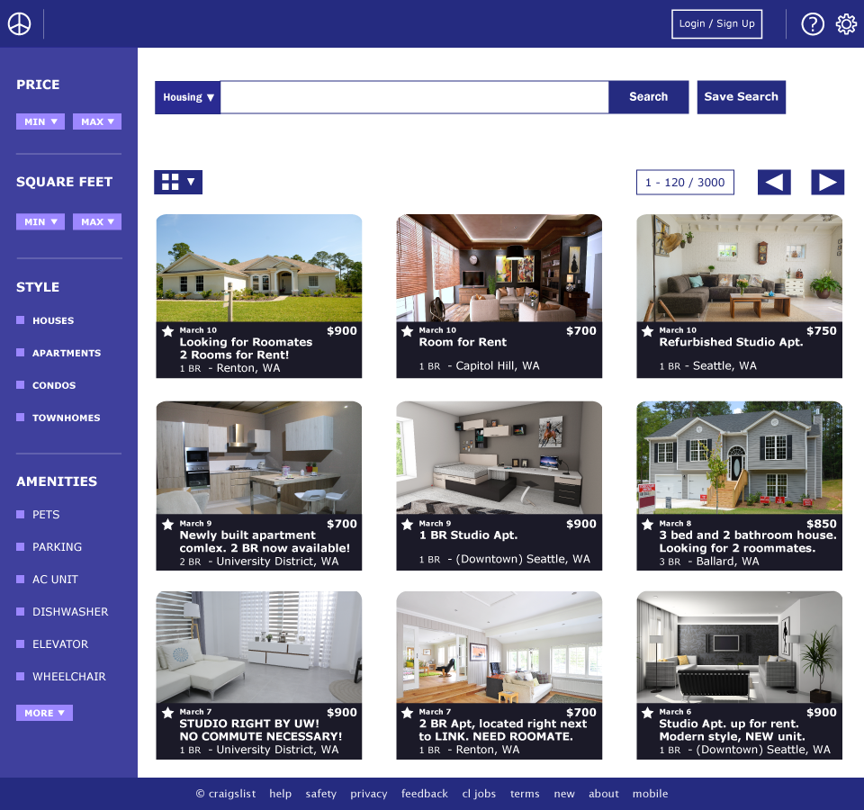
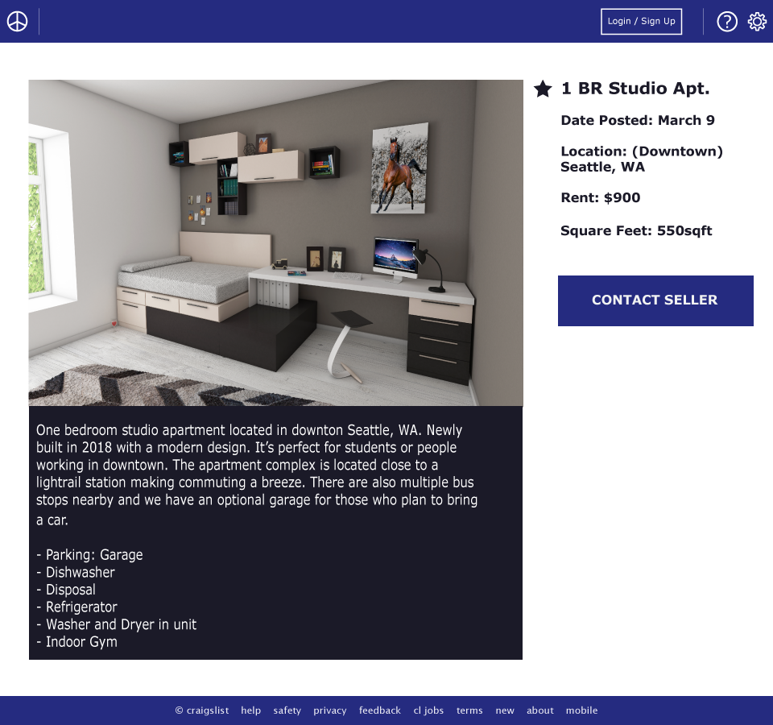

Craigslist Redesign

SUMMARY
This is a side project I worked on over the course of three weeks. It was a great way for me to practice my design skills and conduct some user research on my own. The quote above does an effective job of summing up my thought process for this redesign. Craigslist has a dedicated userbase and the success of the website is still evident today. My research and design sections explain more on why I chose to focus on UI rather than toying with a lot of the features of the website. I took what I learned from the classroom/research and applied those skills to create a design that I'm satisfied with. At least for now...
RESEARCH
Craigslist has a huge user base, even with its outdated layout. So what makes it so successful?
HERE'S WHAT I FOUND
- Choosing which categories to display.
- Easy to navigate and the options are well organized.
- Doesn't fill the screen with advertisements.
- It's just been around for a while.
This overall simplicity and reliability of the site seem to be the big selling points. I experienced this myself as I was navigating through the different pages. It's not the most exciting website, but it gets the job done. I've created a user flow to give a better sense of how the process works.
USER FLOW
DESIGN
MY APPROACH
The user flow is a great representation of how the site as a simplistic interface. It's easy to use and that's a selling point for avid users. And if it's not broken, then why fix it? For my redesign, I wanted to keep this simple and elegant format in mind. I decided to keep most of the features already implemented, such as the item filtration systems and categories. I wanted to make them clearer and easier to read for users. A lot of the small blue text can clutter up the screen so I wanted to add more visible icons. Many of the different options felt out of place on the screen, so I reorganized the format and placement of them.
 The homepage is the piece I am most proud of because I believe it fully captures the simplicity of the original layout but with a modern twist. The page image would change depending on the location a person chooses. The categories are all laid out similar to the column format of the original website except there are now images to help identify each category. If I had more time I would edit the designs of the other two pages because I think they look slightly cluttered at the moment.
REFLECTION
This side project was my first time researching, designing, and prototyping something on my own. It was a great project for me to test what I learned from the classroom and undergraduate research teams. I had to run through the various steps of the design process to come up with these final designs and it was a great experience. If I had more time I would definitely brush up the design some more and work on actually coding the website or developing an interactive prototype. Although it was a challenge, this was an extremely rewarding experience and I hope to do more work in the future.